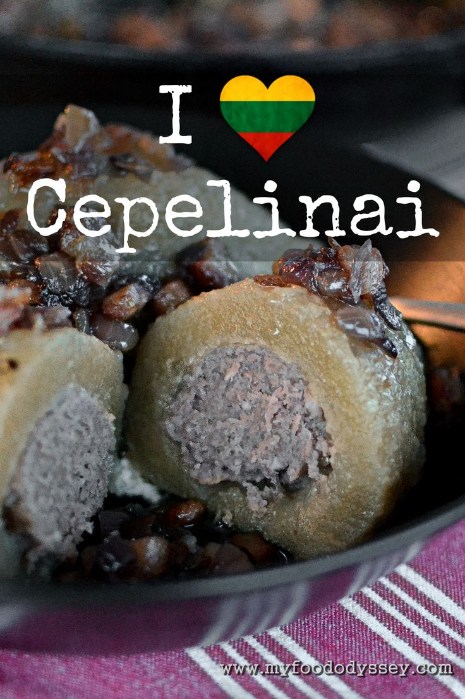

Cepelinai

Description
Cepelinai are potato dumplings made from grated potatoes and stuffed with ground meat, dry curd cheese, liver, or mushrooms. It has been described as a national dish of Lithuania, and is typically served as a main dish.
Ingredients
For the potato dough
- 3 kg potatoes
- 2 tsp salt
- ½ tsp garlic powder
- Potato starch
For the meat filling
- 500 g pork mince
- 1 tsp salt
- ½ tsp garlic powder
- 2 tbsp cold water
For the topping
- 250 g smoked bacon belly
- 400 g onion
To cook
- 2 tbsp potato starch
- 100 ml cold water
To Serve
- 8 tbsp sour cream
Steps
- Peel the potatoes, placing the potatoes into a large bowl of cold water as they are peeled to ensure they do not turn brown.
- Take 500 g of potato, cut into quarters and place in a saucepan. Cover the potatoes with boiling water, place on a high heat and bring back to the boil, then reduce the heat to low, cover with a lid and simmer for 8-12 minutes until the tip of a knife can easily be inserted into the potato pieces. Drain and set aside, uncovered, to cool.
- While the potatoes are boiling grate or purée the remaining raw potato. If youre not lucky enough to own a specialist potato grating machine, then use either the zesting side of a box grater or purée the potatoes to a very fine pulp in a food processor. If using a food processor you will need to process the potatoes in two batches to ensure there are no small lumps left in the purée.
- Pour the purée into a large piece of butter muslin or cheesecloth (I use a cotton pillowcase) set over a large bowl. Gather the corners of the material and twist to squeeze out all water from the potatoes. This can take 5-10 minutes depending on the variety of potato and the strength of your hands.
- When no further water can be squeezed from the grated potato, carefully transfer the dry grated potato to a large bowl. Keep the liquid that came out of the potatoes, you may need this later
- Using a potato ricer or masher, mash the cooked potatoes until no lumps remain. (Do not add any liquids or fats to the potato as you might if you were making mashed potato.) Add the mashed potato to the grated raw potato.
- Add the salt to the potato and mix well with your hands to fully incorporate the ingredients.
- The resultant dough should be roughly the consistency of play dough, it should form a smooth ball easily but should not stick to your hands. The consistency of the dough is key to the success of your final cepelinai. If it is too wet it will stick to your hands as you form your dumplings. If it is too dry it will crack as you form the dumplings and they may split or fall apart during cooking. If your mix is too dry add a little of the liquid from the grated potatoes, 1 tablespoon at a time, until it reaches the required consistency. If the mixture is too wet, add some potato starch or cornflour, 1 tablespoon at a time, until it reaches the required consistency.
- In a separate bowl, add the pork mince (ground pork), salt, garlic powder and water. Mix thoroughly using your hands.
- Divide both the potato dough and meat mixture into 8 equal portions and lay out on a plate or worktop ready for assembly. Form the meat into tight balls the shape of a rugby ball
- You are now ready to form your cepelinai. Take a portion of dough and flatten it against the palm of your hand until it is roughly the shape of your hand and just under 1 cm (½ inch) thick, turning regularly as you shape the dough to ensure it does not stick to your hands.
- Place a piece of meat on the centre of the dough, fold the sides of the dough over the top of the meat and pinch the dough together firmly to seal the join. Firmly press the dumpling between your two palms, rotating the dumpling little by little, to form the classic zeppelin shape.
- Ensure there are no cracks on the surface of the dumpling. If you find any cracks, dip your fingertip into the juice from the grated potatoes and gently smooth over the cracks to seal them.
- Continue with the remaining ingredients until you have assembled all your cepelinai.
- Half-fill a 7 litre saucepan, Dutch oven or other large saucepan with cold water and set over a high heat. When the water is boiling, mix 2 tablespoons of potato starch or cornflour with a cup of cold water and add to the saucepan, stirring well as you add the starch liquid to ensure it does not form a gelatinous ball. Adding starch to the cooking water helps to prevent the dumplings from splitting during cooking. It also helps to give the dumplings a smooth, glossy exterior.
- Carefully add the dumplings to the saucepan. (They will initially sink to the bottom, but will later float to the surface.) Cover the saucepan with a lid, bring the water back to the boil, then reduce the heat to very low so that the water is just barely simmering – if the water is boiling too hard the dumplings might split. Simmer for 45 minutes.
- While the cepelinai are cooking make the spirgučiai. Add the bacon pieces to a frying pan or saucepan and set over a high heat. There is no need to add any oil or fat as the fat will render from the bacon. When the bacon pieces are golden and starting to crisp, add the onion and reduce the heat to medium. Cook, stirring frequently, until the onions are soft and just starting to turn brown.
- To serve, carefully lift the cepelinai from the saucepan using a slotted spoon and place on a bowl or plate. Top with a spoon of spirgučiai and a dollop of sour cream.
Home